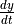

Selecting Values¶
RoadRunner supports wide range of options for selecting SBML and derivative values. Selections can be used to either retrieve or store values. We define SBML values as any element specified in the original SBML document, whereas derivative values are a function of one or more SBML values. As these functions typically have no inverse, these are read only selections.
Selections are used a number of RoadRunner methods. They are used to determine what columns are selected in a simulation result and can also be used to directly select model values.
Selection syntax¶
The selection syntax is case sensitive (SBML elements are case sensitive), however it ignores all white space.
Selection Types:
- Time:
time The string
timeis interpreted as the current model time.- Identifier
Any continuous sequence of printing characters is treated as an SBML identifier with the exception of
time, i.e.S1,P1,J0_Keq1,compartment, etc. These have to be valid SBML identifiers. If no SBML identifier is found, an exception is raised. Note that if the identifier is a chemical species, it is interpreted as the species amount.- Concentration
[] Following generally accepted chemical nomenclature, any continuous sequence of characters inside a pair of squared brackets,
[]is interpreted as a concentration, i.e.[S1],[S2], etc. The identifier must be a valid SBML species, otherwise an exception is raised.- Rates of Change:
' Represents the rate of change,  of a species amount. Rates of change selections follow generally accepted mathematical convention of using the single quote,
'to represent a time derivative. A rate of change selection is any identifier followed by a single quote, i.e.S1',S2',P1', etc. A rates of change selection is also valid for SBML elements which are defined by rate rules. In Python, use mixture of single and double quote to specify the rates of change as string, e.g."S1'"- Elasticity:
ee(ReactionId, ParameterId) Represents elasticity slection in the form of
ee(ReactionId, ParameterId)whereReactionIdis a reaction name andParameterIdis a global parameter id. This selection intentionally has a function form, it selects the elasticity control coefficient,getEE()- Unscaled Elasticity:
uee(ReactionId, ParameterId) Represents unscaled elasticity slection in the form of
uee(ReactionId, ParameterId)whereReactionIdis a reaction name andParameterIdis a global parameter id. This selection intentionally has a function form, it selects the elasticity control coefficient,getuEE()- Control Coefficient:
cc(Id, ParameterId) Represents control coefficient selection in the form of
cc(Id, ParameterId)whereIdis a flux or species name andParameterIdis a global parameter id. The stringIdandParameterIdmust be valid arguments forgetCC(). This selection intentionally has a function form, it selects the elasticity control coefficient,getCC()- Unscaled Control Coefficient:
ucc(Id, ParameterId) Represents unscaled control coefficient selections in the form of
ucc(Id, ParameterId)where Id` is a flux or species name andParameterIdis a global parameter id. The stringIdandParameterIdmust be valid arguments forgetuCC(). This selection intentionally has a function form, it selects the unscaled elasticity control coefficient,getuCC()- Eigenvalue:
eigen(),eigenReal(),eigenImag() Represents the eigenvalue of a floating species.
eigen(identifier)is complex number whereaseigenReal(identifier)is the real part of eigenvalue andeigenImag(identifier)is the imaginary part of eigenvalue.- Initial Value:
init() Represents the initial value of an identifier (species or global parameter) specified in the SBML document, i.e.
init(S1). Setting this value does not reset the current value of the quantity. WhenresetAll()is called, the current values of all quantities will be reset to the designated initial values, including any changes made to the initial values via this syntax. This is in contrast toresetToOrigin(), which resets all current and initial values to the values specified in the SBML document.- Stoichiometry:
stoich(ParameterId, ReactionId) Represents the stoichiometric coefficient for a given species and reaction.
Getting/Setting the Amount/Concentration of a Species¶
To retrieve the amount of a species “S1”, one may do any one of:
>>> rr.S1_amt
>>> rr["S1"]
>>> rr.getValue("S1")
To retrive the concentration of a species “S1”, one may do any one of:
>>> rr.S1_conc
>>> rr["[S1]")
>>> rr.getValue("[S1]")
Note that for backwards-compatibility reasons, the following gets the concentration of a species:
>>> rr.S1 # gets concentration
Finally, the syntax for setting the value of a species is analogous to above, e.g.:
>>> rr.S1_amt = 42 # sets amount
>>> rr["[S1]"] = 1.4 # sets concentration
Experimenting With Selections¶
One might try individual selection string using the getValue() method. This
takes a selection string, determines if it is valid, and returns the value it selects. For example:
>>> rr.getValue("cc(S1, J4_KS4)")
-0.42955738179207886
Even though they are almost always specified by a string, RoadRunner selections are actually
objects. One can create a selection object using createSelection(). In
order to see extended information about the selection, try:
>>> sel = rr.createSelection("cc(S1, J4_KS4)")
>>> sel
SelectionRecord({'index' : -1, 'p1' : 'S1', 'p2' : 'J4_KS4', 'selectionType' : CONTROL})
We can see that this is a CONTROL record.
It is also possible to modify the simulation selection list by deleting existing items and adding
new ones created with createSelection(). If someone has does not want to display
the concentration of species S2 and instead wants to display the rate of change of species
S1, try:
>>> rr.timeCourseSelections
["time", "[S1]", "[S2]", "[S3]", "[S4]"]
>>> sel = rr.createSelection("S1'")
>>> rr.timeCourseSelections[2] = sel
>>> rr.timeCourseSelections
["time", "[S1]", "S1'", "[S3]", "[S4]"]
Even though the selection list intentionally appears as a list of strings, it is actually a list of
selection objects. So, elements that are inserted or appended to this list must be selection objects
created by createSelection().
Selecting Simulation Results¶
The columns of the RoadRunner simulation results are determined by the timeCourseSelections
property. This is a list of what values will be displayed in the result, and can be set simply by:
>>> rr.timeCourseSelections = ['time', '[S1]', 'S1', "S1'"]
This example selects the columns time, concentration of S1, amount of S1, and rate of change
of S1. One may also have derivative values in the simulation selection, for example, if one
wanted to plot the elasticity of a particular reaction J1:
>>> rr.timeCourseSelections = ['time', '[S1]', "ee(J1, P1)"]